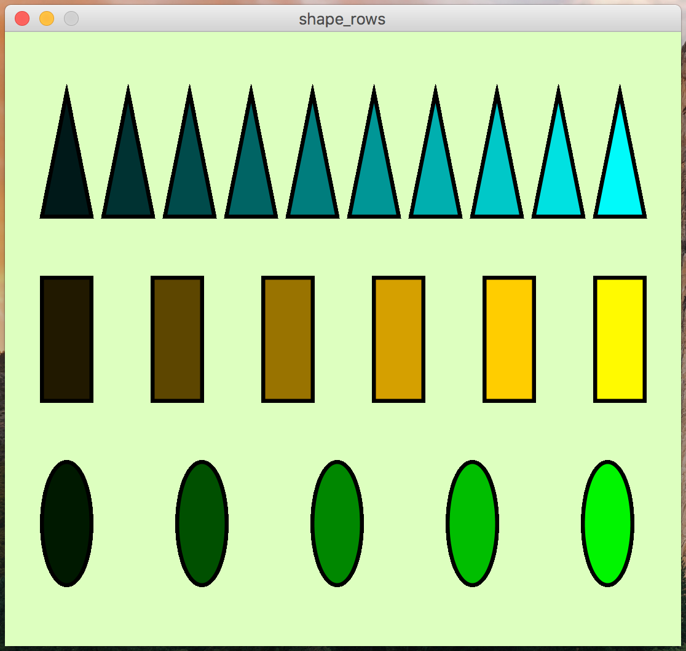

In this assignment, you will write a processing program that generates multiple sequences of shapes using for loops.
The result of this program should be a static picture (no movement), but you should still use the setup and draw functions.
The final result of your program should look similar to this:

There are several rules you must follow when writing this code:
When making your image, you are NOT allowed to use the same order/number of shapes as the picture. In my image I chose to do:
You may not mimic this exactly. You could do something like:
Or and other combination, that does not match the picture.
Name your program shape_rows.pde.
All of your programming should be well-formatted and easy for the graders to read and comprehend. You should follow the style guidelines that we have discussed in class. Each program file should have a header comment at the top that has roughly the following format:
//
// Author: Student Name
// Description:
// A short description of what this program does!
//
It is due on 2/9/2018 at 5:00pm.
Turn in each of the files described in the spec (1 total) the assignment 4 dropbox in D2L before the due date. Make sure to name the files exactly as this document specifies. In general, make sure to follow these instructions precisely.